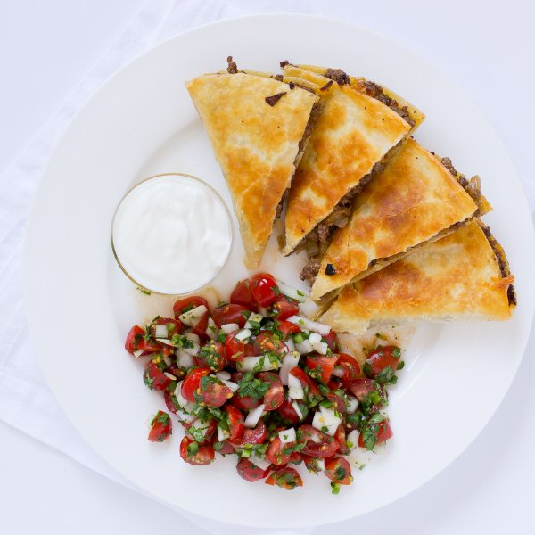

Cheeseburger Quesadilla with Pico de Gallo & Greek Yogurt

Nutrition (per serving)
881.2 kcalCalories
55.7 gProtein
44.7 gCarbs
53.1 gFat
Full nutrition table
| Calories | 881.2 kcal |
| Total fat | 53.1 g |
| Saturated fat | 24.8 g |
| Trans fat | 2.9 g |
| Cholesterol | 175.1 mg |
| Sodium | 934 mg |
| Carbohydrates | 44.7 g |
| Fiber | 4.8 g |
| Sugars | 9.5 g |
| Protein | 55.7 g |
| Potassium | 1193.2 mg |
| Calcium | 549.7 mg |
| Iron | 7.1 mg |
| Vitamin A | 1778.5 IU |
| Vitamin C | 38.5 mg |
| Vitamin D | 18.7 IU |
Cookware
Ingredients
- 1 (8 oz) blockcheddar cheese
- 1 small bunchcilantro
- 2 pintsgrape tomatoes
- 2jalapeño peppers
- 4large flour tortillas
- 1 ½ lblean ground beef
- 1lime
- ½ cupplain Greek yogurt
- 1 mediumred onion
- black pepper
- chili powder
- cumin, ground
- salt
- virgin coconut oil
Steps
- Wash and dry the fresh produce.2 pints grape tomatoes
2 jalapeño peppers
1 lime
1 small bunch cilantro - Quarter the tomatoes and transfer to a medium bowl (that will hold the salsa).
- Quarter the jalapeño peppers lengthwise; remove and discard the stem, seeds, and membranes. Finely dice the peppers and add to the salsa bowl.
- Using a knife, shave the cilantro leaves off the stems at a downward angle, working away from your body; discard the stems and finely chop the leaves. Add to the salsa bowl.
- Heat a nonstick skillet over medium heat.
- Trim off and discard the ends of the onion and remove the outer layer; small dice the onion (cut into ¼-inch pieces). Add ½ of the onion to the salsa bowl and leave the rest on the cutting board.1 medium red onion
- Once the skillet is hot, add coconut oil to the skillet and swirl to coat the bottom.1 tbsp virgin coconut oil
- Add the remaining diced onion to the skillet; cook, stirring frequently, until softened, 3 to 5 minutes.
- Juice the limes and add to the salsa bowl.
- Season the salsa with salt and pepper; mix together and set aside.1 tsp salt
½ tsp black pepper - Add the ground beef to the skillet and season with chili powder, cumin, salt, and pepper. Cook, breaking apart with a spoon, until the beef is browned and crumbly, 3 to 4 minutes. Once done, transfer the mixture to a bowl.1 ½ lb lean ground beef
1 tsp chili powder
1 tsp cumin
1 tsp salt
½ tsp black pepper - While the beef cooks, coarsely grate 2 cups of cheddar.1 (8 oz) block cheddar cheese
- Once the beef mixture has been transferred, remove any leftover bits from the skillet.
- Place the tortillas on a flat surface. Layer one half of each tortilla with ⅛ of the cheese, ¼ of the beef mixture, and another ⅛ of the cheese. Fold tortillas over to close.4 large flour tortillas
- Place 2 of the quesadillas in the skillet, straight edges next to each other. Cook until golden brown on both sides and the cheese is melted, 2-4 minutes per side. Once done, transfer the quesadillas to a cutting board. Repeat with the remaining 2 quesadillas.
- Cut each quesadilla into 4 wedges.
- To serve, divide the quesadillas between plates and serve with the pico de gallo and Greek yogurt. Enjoy!½ cup plain Greek yogurt